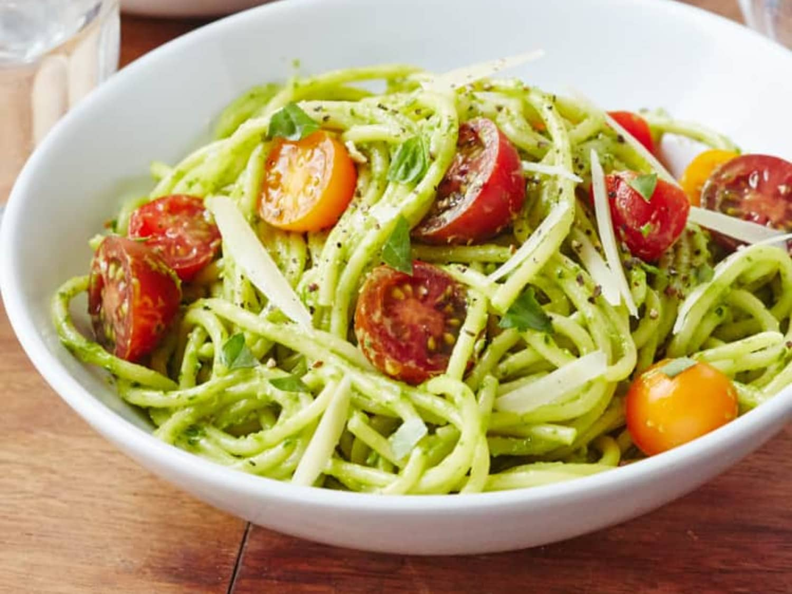
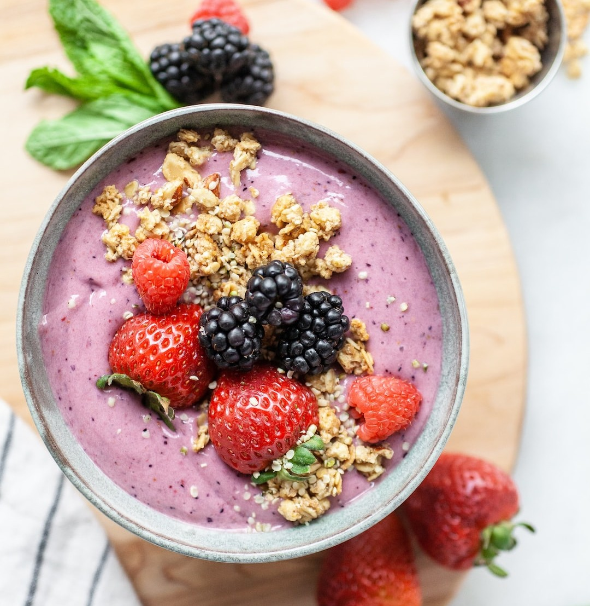
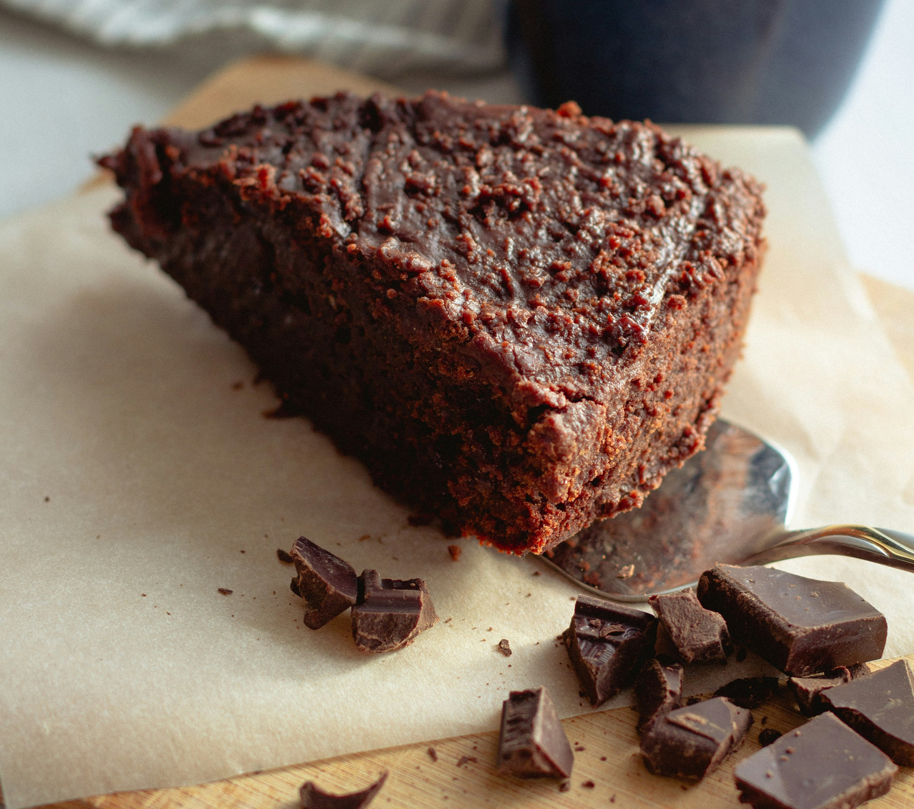
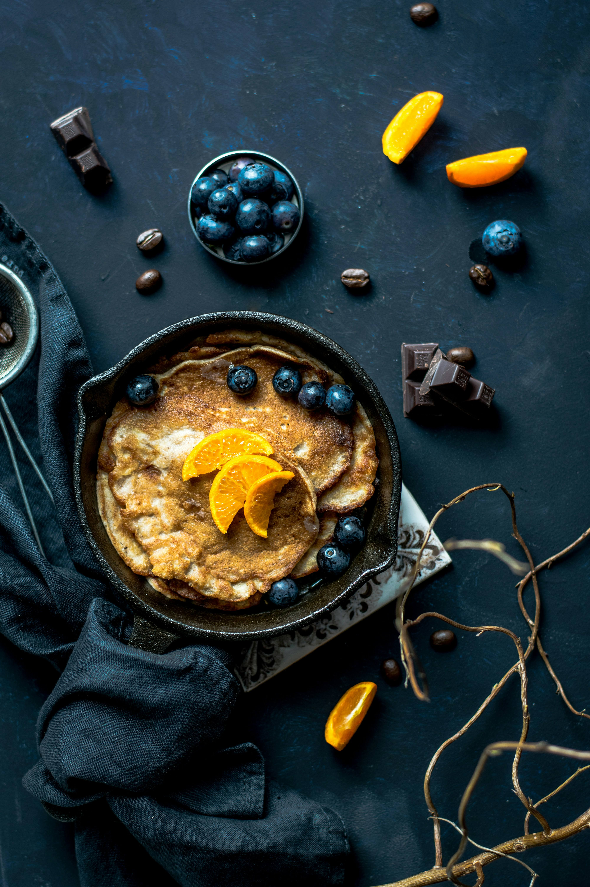
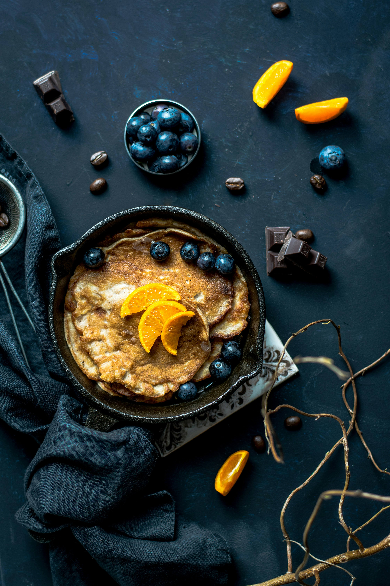

✨ Food ✨
Explore my favorite recipes, restaurant reviews, food photography, and culinary tips!
Recipes
Discover new and exciting recipes that I love to cook at home. From breakfast to dinner, I share easy and delicious recipes for all occasions.
Pasta with Avocado Sauce
Ingredients:
- 1 ripe avocado
- 2 cloves garlic
- Juice of 1 lemon
- 2 tbsp olive oil
- Salt & black pepper to taste
- 2 servings of spaghetti
- Optional: cherry tomatoes, basil, cheese
Instructions:
- Cook the pasta and drain.
- Blend avocado, garlic, lemon, oil, salt & pepper.
- Toss with pasta and garnish. Serve warm.
Healthy Smoothie Bowls
Ingredients:
- 1 frozen banana
- ½ cup frozen berries
- ½ cup Greek or plant yogurt
- ¼ cup almond milk
- Toppings: granola, fruit, chia seeds
Instructions:
- Blend banana, berries, yogurt, and milk.
- Pour into a bowl and smooth the top.
- Add toppings. Enjoy immediately.
Homemade Chocolate Cake
Ingredients:
- 1 cup all-purpose flour
- 1 cup sugar
- ½ cup cocoa powder
- 1 tsp baking soda
- ½ tsp salt
- 1 cup water
- ⅓ cup vegetable oil
- 1 tbsp vinegar
- 1 tsp vanilla extract
Instructions:
- Preheat oven to 175°C. Grease pan.
- Mix dry and wet ingredients separately.
- Combine, pour into pan, and bake 30–35 mins.
- Cool and serve with frosting or sugar.
Restaurant Reviews
My experiences at some of the best restaurants I've visited. I share honest reviews about the food, ambiance, and service!
🍖 Food
🪷 Ambiance
😊 Service
TTDI Chakuro Yakiniku
High-quality meats, perfectly marinated and grilled. The yakiniku selection is impressive with fresh, juicy cuts and excellent presentation.
Modern and cozy interior with Japanese-inspired aesthetics. A warm, intimate setting perfect for small groups or date nights.
Professional and welcoming staff. They explain the grilling process clearly and are always ready to assist when needed.
Food Photography
Here are some of my favorite food photography shots! Capturing the beauty of food has always been a passion of mine.
 

🍳 Culinary Tips to Elevate Your Cooking
Explore simple yet powerful techniques that can transform your dishes. Whether you're a home cook or aspiring chef, these tips will make your food taste and look even better!
🥚 How to Poach Eggs Perfectly
Tip: Use the freshest eggs for the best results. Add a splash of vinegar to the simmering water to help the whites set. Gently slide in the egg and let it poach for 3–4 minutes.
✅ Keep the water at a gentle simmer, not a rolling boil. The key is patience and a steady hand. Serve on toast with avocado or over your favorite dish for a café-style breakfast!
🧂 How to Season Like a Chef
Tip: Begin with the basics — salt and pepper. Salt enhances natural flavors, while pepper adds a subtle heat.
✨ Add depth with herbs and spices: a dash of smoked paprika, or a sprinkle of thyme or rosemary. Taste as you go and season in layers to build flavor like a professional chef.
🥩 The Magic of Marinades
Tip: Combine an acidic ingredient (like lemon juice or vinegar) with oil, herbs, and spices. This tenderizes the meat and infuses it with flavor.
⏳ Marinate for at least 30 minutes — or overnight for intense flavor. Perfect for chicken, beef, tofu, or veggies. A good marinade = juicy, flavorful, unforgettable dishes!
🥄 How to Make the Perfect Soups & Sauces
Tip: To get that rich, velvety texture in your soups and sauces, always simmer low and slow. Start with a flavorful base (like onions, garlic, or carrots), then add your liquids and let it cook gently to allow the flavors to meld together.
✨ Bonus: For extra creaminess, finish with a dollop of heavy cream or a splash of coconut milk to elevate the texture and flavor.
🍞 How to Perfect Your Bread-Baking Skills
Tip: The secret to light, fluffy bread is proper kneading and resting. Knead your dough for at least 10 minutes to develop the gluten, then let it rest in a warm place for 1–2 hours to rise.
✨ Pro Tip: For the perfect crust, bake your bread on a preheated stone or baking sheet and add a little water to the oven to create steam — this helps to achieve that golden, crispy crust.
Restaurant Reviews
My experiences at some of the best restaurants I've visited. I share honest reviews about the food, ambiance, and service!
🥩 Food
🍷 Ambiance
👍 Service
TTDI Meat Point
Known for its steaks and grilled meats, this place delivers on flavor and portion size. Everything is well-seasoned and cooked to your preference.
A relaxed and slightly rustic vibe. Great spot for meat lovers who enjoy a hearty meal in a no-fuss, comfortable setting.
Service is quick and friendly. Staff are knowledgeable about the cuts and cooking styles, helping you make the perfect choice.